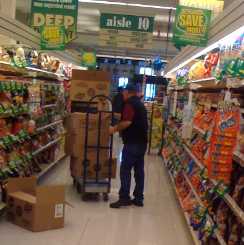

How to do Sean's Summer Job

After the Spring semester ended at Virginia Tech, I went home for a month and worked at a local grocery store to make some extra money. I was a grocery associate at said store. Below, are some instructions on how to perform this job.
Beforehand, you will need some materials to be able to do the job the best way.
These materials include:
- Grocery store uniform (green shirt, khaki pants, black shoes.
- A sharp boxcutter
- Strong hands and a lot of energy
Here are the steps one must take on at my job every day:
- Clock in at the computer.
- Head to the back of the store and begin breaking down the grocery truck delivery pallets.
- Take items off of pallets and place them on to carts according to what aisle the item goes on.
- Once there are no more carts available or all of the pallets have been broken down, take out a full cart to its respective aisle.
- Use the boxcutter or your hands to open cases on the cart and place the items on the shelves.
- Repeat steps 4-5 until there are no carts left.
- Clean up the backroom and fill up the sugar and water shelves.
- Ask the manager on duty if there is anything else that needs to be taken care of. If not, time to clock out at the computer, and you're done!
Home